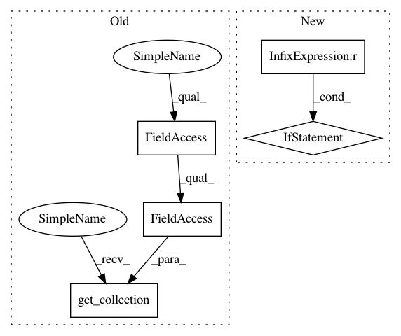

48d178cfbb60e5b0004f63b2eca37b2449bb6c67,a2c/a2c.py,Model,__init__,#Model#Any#Any#Any#Any#Any#Any#Any#Any#Any#Any#Any#Any#Any#Any#Any#Any#Any#,26
Before Change
vf_loss = tf.reduce_mean(mse(tf.squeeze(train_model.vf), R))
self.params = params = tf.get_collection(tf.GraphKeys.TRAINABLE_VARIABLES, scope="model")
self.params_common = params_common = tf.get_collection(tf.GraphKeys.TRAINABLE_VARIABLES, scope="model/common")
self.params_pi1 = params_pi1 = tf.get_collection(tf.GraphKeys.TRAINABLE_VARIABLES, scope="model/pi1") + params_common
After Change
train_loss_xy0 = pg_loss_xy0 + vf_coef * vf_loss
self.grads_check_xy0 = grads_xy0 = tf.gradients(train_loss_xy0, params_xy0)
if max_grad_norm is not None:
grads_xy0, _ = tf.clip_by_global_norm(grads_xy0, max_grad_norm)
grads_xy0 = list(zip(grads_xy0, params_xy0))
trainer_xy0 = tf.train.RMSPropOptimizer(learning_rate=lr, decay=alpha, epsilon=epsilon)
_train_xy0 = trainer_xy0.apply_gradients(grads_xy0)
In pattern: SUPERPATTERN
Frequency: 3
Non-data size: 5
Instances
Project Name: chris-chris/pysc2-examples
Commit Name: 48d178cfbb60e5b0004f63b2eca37b2449bb6c67
Time: 2017-10-31
Author: sjhshy@gmail.com
File Name: a2c/a2c.py
Class Name: Model
Method Name: __init__
Project Name: tensorflow/cleverhans
Commit Name: cdf52a41ffadabbd505c45919bb29503ae0820b8
Time: 2018-07-09
Author: dberth@google.com
File Name: cleverhans/utils_tf.py
Class Name:
Method Name: model_train
Project Name: chris-chris/pysc2-examples
Commit Name: 48d178cfbb60e5b0004f63b2eca37b2449bb6c67
Time: 2017-10-31
Author: sjhshy@gmail.com
File Name: a2c/a2c.py
Class Name: Model
Method Name: __init__
Project Name: deepchem/deepchem
Commit Name: 84398f9fb6e6a8d2bb913367fdd389f9ca3a5405
Time: 2019-04-08
Author: peastman@stanford.edu
File Name: deepchem/models/tensorgraph/tensor_graph.py
Class Name: TensorGraph
Method Name: get_layer_variables